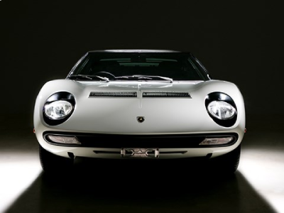

|  |
Lamborghini Miura
|
The Lamborghini Miura is a high-performance sports car produced by the Italian automaker Lamborghini between 1966 and 1973. It is widely regarded as one of the most beautiful and influential sports cars of all time and is often credited with pioneering the modern supercar genre.
The Miura features a mid-engine layout and is powered by a naturally aspirated 3.9-liter V12 engine, which produced 350 horsepower in the later models. It was available with a manual transmission only.
The Miura's exterior design was characterized by flowing curves and a low-slung profile that was inspired by racing cars of the era. The interior was luxurious, with high-quality materials and a driver-focused cockpit.
The Miura was known for its impressive performance, with a top speed of around 170 mph and a 0 to 60 mph time of around 6 seconds. It was also one of the first sports cars to use a mid-engine layout, which helped to improve its handling and balance on the road.
Despite its relatively short production run, the Miura has achieved a legendary status in the automotive world and is considered by many to be one of Lamborghini's greatest achievements. Its unique and influential design has influenced the styling of countless sports cars that followed.